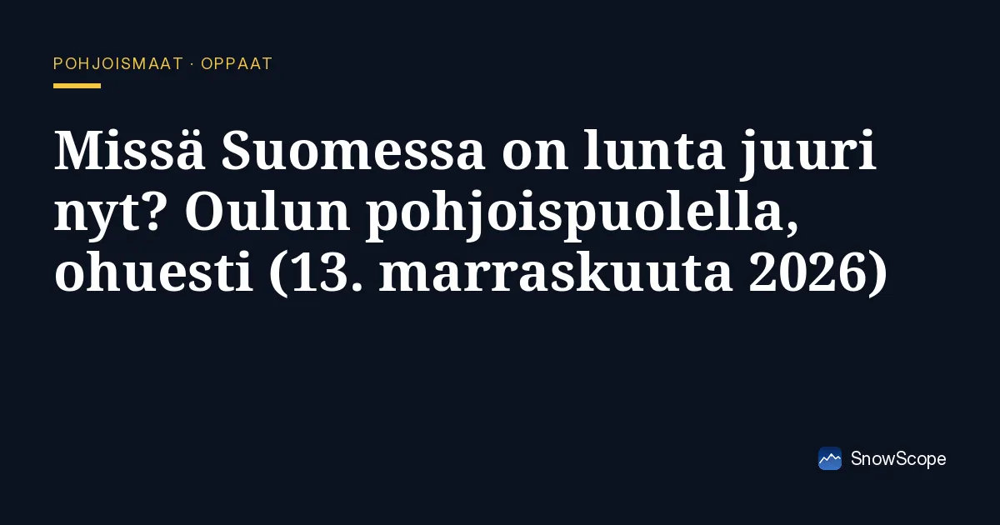

Missä Suomessa on lunta juuri nyt? Oulun pohjoispuolella, ohuesti (13. marraskuuta 2026)
Perjantaina 13. marraskuuta Suomen lumi jakaa maan lähes täysin kahtia. Oulun pohjoispuolella maisema on valkoinen – vaikka ei missään paksu. Etelä pysyy paljaina. Raja on terävä: asemilla pohjoispuolella 64. leveysastetta pääosin näkyy lunta maassa, kun taas keskivyöhykkeellä ja Helsingin seudulla ei ole.
Katso kohteen Suomi lumiennuste reaaliajassa SnowScope-sovelluksessaLumensyvyys, puuterihälytykset ja 3D-kartta, ilmaiseksi.
Rovaniemen seutu johtaa, mutta niukasti
Rovaniemi ja luode-osat ovat maan syvemmässä lumessa. Rovaniemi Apukka mittasi 8 cm, Rovaniemi lentokenttä 7 cm ja Ylitornio lännessä 6 cm. Nämä ovat asemat, joille hiihtäjät ja ulkoilijat lähtisivät tänään. Kaikki kolme keräsivät lunta yön yli: Apukka nousi 6 cm:stä torstaina 8 cm:iin perjantain aamulla.
Enontekiö Kilpisjärvi, maan pohjoisin mittauspiste, säilyttää 13 cm – maan maksimin. Tämä korkea-aavan asema kaukaisen luoteen puolella on poikkeama toistaiseksi, mutta se vihjaa, minne lumensyvyys tulee kasvamaan kun talvi asettuu. Sitä vastoin keskeisen arktisen aavan kaupungit ovat harvoja: Saariselällä on vain 4 cm, Lokalla 2 cm ja Utsjoen asemilla Nuorgamissa ja Kevolla 2 cm kummallakin.

Oulu ja itäinen rannikko: tuoretta yön yli
Perjantain aamun yllätys oli yöllinen lumisade Pohjanlahden rannikolla. Oulu Kaukovainio mittasi 7 cm, Siikajoki Ruukki 8 cm ja Hailuoto 5 cm. Kaikilla kolmella oli paljas maa torstaina ja ne tulivat valkoisiksi yhdessä yön tapahtumassa. Tämä on se nopea muutos, joka tekee vuodenaikaisesta lumenpeittävyydestä epäluotettavaa: lumi tulee nopeasti ja voi sulaa nopeasti.
64. ja 66. leveysasteen välillä 23:lla 25 asemasta oli lunta. 66. ja 68. leveysasteen välillä 15:llä 19:llä. Tyypilliset syvyydet tässä vyöhykkeessä ovat 5–9 cm. Kuusamo, toinen keskeinen talvikohde, mittasi myös 8 cm 13. päivän aamulla.
68. leveysasteen pohjoispuoli: ohuempi kuin historiateokset viittaavat
Lapin alhaisin vyöhyke pitäisi olla Suomen lumitäysin alue, mutta tänä vuonna se ei ole. 68 asteen pohjoispuolella vain 8:lla 14:stä asemasta oli yhtään lunta. Alue kirjasi maksimin 13 cm (Kilpisjärvi), mutta useimmat asemista olivat paljaita tai säilyttivät vain muutaman senttimetrin. Tämä rikkoo talvikuvion. Ruotsin puolella oleva Kiruna on normaalisti 13. marraskuuta lumisina: sen 46 vuoden keskiarvo on 23 cm, syvyyden ollessa tyypillisesti 14–35 cm tähän aikaan mennessä. Tämän vuoden lähes täydellinen puuttuminen viittaa siihen, että kylmä, joka ruokkii kaukaisen pohjoisen, saapui myöhään tai jäi tavanomaisen vyöhykkeen eteläpuolelle.
Keski-Suomi ja etelä: paljaita ja odottamassa
60. ja 62. leveysasteen välillä – vyöhykkeellä, joka sisältää Tampereen, Helsingin ja eteläisen Karjalan – vain 6:lla 53:sta asemasta oli lunta eikä missään yli 2 cm. Helsingin viidellä säähavaintoasemalla kaikilla oli 0 cm. Tampereen seutu oli yhtä paljas. Tämä ei ole epätavallista. Helsingin historiallinen kirjaus osoittaa, että kaupunki saa pysyvää lunta noin 20. marraskuuta keskimäärin, joten etelä juoksee aikataulussa.
Talvikuvio on selvä: kylmät ilmamassat eivät saavuta etelää ennen kuukauden loppua. Ensimmäinen pysyvä lumi yleensä saapuu marraskuun viimeisellä viikolla tai joulukuun alussa. Keski-alueiden hiihtäjien tulisi odottaa paljaaa maata vielä vähintään viikoksi tai kahdeksi.
Viikonloppu: vähän lisää pohjoiseen, sadetta etelään
Kylmä, joka toi lunta pohjoiseen, säilyy mutta ei lisää paljon. Rovaniemelle ennustetaan noin 5 cm saantia lauantain ja sunnuntain yli, öiden laskiessa noin -8–-12 °C:een. Oulu näkee 1–2 cm lisää samankaltaisella kylmällä. Tämä tuore lumi pysyy maassa koska lämpötilat eivät nouse.
Etelä ottaa eri polun. Helsinki ja keskialueet lämpenevät ja käyvät märiksi. Sadetta odotetaan maanantaihin mennessä, lämpötilojen noustessa kohti 8 °C:ta Helsingissä sunnuntaina. Mikä tahansa hajanainen lumi etelässä sulaa tai pestään pois.
Mitä tämä merkitsee tulevalle viikolle
Jos jahtaat lunta tämän viikonlopun yli, valinta on selvä: matkusta Oulun pohjoispuolelle. Rovaniemi, Kuusamo, Kemijärvi ja Oulun seutu ovat valkoisia. Kaukainen etelä pysyy paljaina vähintään vielä viikon, todennäköisesti kahden. Vuodenaikaisesta lumesta on ohut ja voi piilottaa vaaroja: joet, järvet ja suot eivät ole vielä jäätyneet, ja avoin vesi makaa valkoisen peitteen alla. Talviprenssit ovat pakolliset millä tahansa retkellä Oulun pohjoispuolelle – Oulun teillä oli tuoretta lunta yön yli ja olosuhteet säilyvät kylminä koko viikonlopun yli.
Vinkkejä laskijoille
- Lumelle tämän viikonlopun yli, matusta Oulun pohjoispuolelle: Rovaniemi (8 cm), Kuusamo (8 cm), Siikajoki (8 cm) ja Oulu itse (7 cm) ovat parhaat vaihtoehdot. Etelä pysyy paljaina.
- Vuodenaikaisesta lumesta on ohut ja epävakaa. Varo avointa vettä, joka piiloutuu valkoisen peitteen alle – järvet, joet ja suot eivät ole vielä jäätyneet.
- Talviprenssit ovat pakollisia ajaessasi Oulun pohjoispuolelle. Tuoretta lunta putosi yön yli Pohjanlahden rannikkoon ja lämpötilat pysyvät lähellä nollaa tai sen alapuolella.
- Pue kerroksia kaukaisen pohjoisen varalle: öissä lämpötila laskee -8–-12 °C:een viikonlopun yli, kun taas etelä lämpenee 8 °C:een ja käy märäksi maanantaina.
- Etelä todennäköisesti pysyy paljaina marraskuun loppuun tai joulukuun alkuun asti, jolloin lumi yleensä asettuu. Suunnittele eteläisen alueen retket joulukuun puoliväliin tai myöhemmin.
Näistä luvuista
Hiihtokeskusten lumensyvyydet ovat syvin lumi keskuksen ylärinteillä näytettynä päivänä; ne ovat arvioita alueelle, eivät mittaus yhdessä pisteessä. Ennusteet voivat muuttua. Lue aina virallinen lumivyöryennuste ennen rinteiden ulkopuolelle lähtöä.
Viittaa tähän raporttiin
Tutkimukseen, opetukseen tai mediaan: luvut ja kaaviot ovat vapaasti käytettävissä CC BY 4.0 -lisenssillä tällä lähdeviitteellä.
SnowScope (2026), Missä Suomessa on lunta juuri nyt? Oulun pohjoispuolella, ohuesti (13. marraskuuta 2026), https://snowscope.app/blog/fi/2026/11/where-is-there-snow-in-finland-13-november-2026.html, luettu 2026-11-13
SnowScope (Atlas Labs). (2026, November 13). Missä Suomessa on lunta juuri nyt? Oulun pohjoispuolella, ohuesti (13. marraskuuta 2026). SnowScope snow reports. https://snowscope.app/blog/fi/2026/11/where-is-there-snow-in-finland-13-november-2026.html
BibTeX
@misc{snowscope2026whereistheresnowinfinlan,
author = {{SnowScope (Atlas Labs)}},
title = {Missä Suomessa on lunta juuri nyt? Oulun pohjoispuolella, ohuesti (13. marraskuuta 2026)},
year = {2026},
month = nov,
howpublished = {\url{https://snowscope.app/blog/fi/2026/11/where-is-there-snow-in-finland-13-november-2026.html}},
note = {Published 2026-11-14 13:29 UTC; accessed 2026-11-13}
}· CC BY 4.0 · Menetelmät, data ja työkalut →
Seuraa: Suomi
Ilmainen: viesti, kun uutta lunta on tulossa, ja ennuste joka aamu.